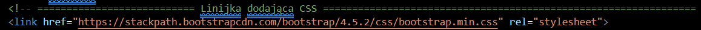

Wstęp do HTML'a
Co możemy zrobić w HTML poza stroną internetową
- CV Tutorial
- Zaproszenie
- Inne dokumenty
Jak zobaczyć kod strony internetowej?
Z czego składa się strona internetowa?
Pobierz plik przyklad.html. Otwórz go w przeglądarce internetowej. Następnie otwórz go w notatniku.
Usuń linijkę dodającą arkusze stylów (CSS)

i odśwież stronę
Cofnij zmiany i usuń linijki dodające JavaScript
Odśwież stronę
Znaczniki HTML

Znaczniki head and body
Jak stworzyć stronę internetową?
Przekopiuj poniższy tekst do notatnika, a następnie zapisz jako strona.html
BS Company Witamy na stronie BS Company! Tutaj znajdziesz wiele interesujących informacji na temat naszej działalności. Misja: Naszą misją jest dostarczanie najwyższej jakości produktów i usług, które spełniają oczekiwania naszych klientów. Wizja: Chcemy być liderem w branży, ciągle się rozwijając i wprowadzając innowacyjne rozwiązania. Zapraszamy do zapoznania się z naszą ofertą i skontaktowania się z nami w razie jakichkolwiek pytań. Kontakt: info@example.com
Otwórz go za pomocą przeglądarki internetowej. Powinieneś otrzymać taki dokument.
Twoim zadaniem będzie przekształcenie dokumentu, tak aby wyglądał tak.
Aby uzyskać efekt, dodaj znaczniki HTML:
- body dookoła zawartości
- h1, aby oznaczyć tytuł strony
- p, aby oznaczyć akapit tekstu
- b, aby oznaczyć tekst wytłuszczonym drukiem
- i, aby oznaczyć tekst kursywą
- zmienić kolor tekstu i wycentrować tytuł
style="color: darkblue; text-align: center"
- ustawić margines i rodzaj czcionki dla całej strony
style="font-family: Arial; font-size: 11pt; margin: 80px;"
Zadania dodatkowe
Poćwicz dodawanie znaczników HTML w zadaniach.